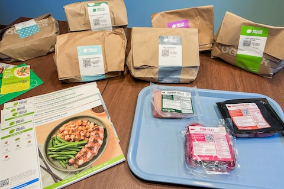
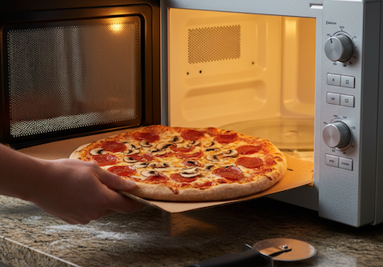

n8n vs. Make vs. Zapier
© Frantisek Leginsky
| Discipline: | n8n | Make | Zapier |
|---|---|---|---|
| 1. Similarity |  |
 |
|
| 2. Philosophy | complete Freedom – Full Technical Flexibility | Visual control to avoid writing Code (Digital Playground) | build for Simplicity, "Anyone can do it – FAST!" |
| 3. Billing | per Workflow | per Operation | per Actions * Addons like Chatbots, Tables, Forms are + |
| 4. Costs | low | mid/high | high |
| 5. Flow | Split & Interconnected | Interconnected | Linear |
| 6. Hosting | Cloud & Self-Hosted - CE | Cloud only | Cloud only |
| 7. Learning Curve | steep | low | even |
| 8. Preview |